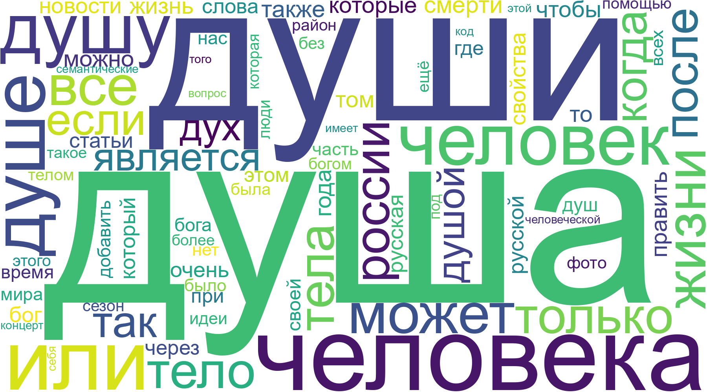
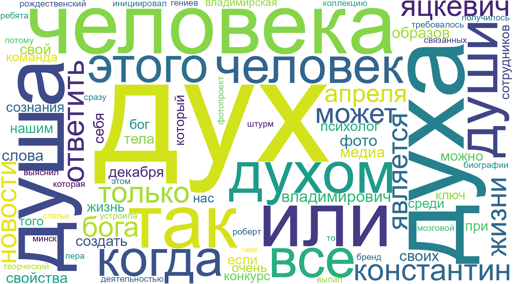

Les mots étudiés
En russe, le mot "âme" peut se traduire par deux manières :
- душа (doucha)
- дух (doukh)
душа (doucha) fait référence à l’âme au sens émotionnel et spirituel, celle qui ressent, aime, souffre et exprime la profondeur humaine. C’est l’âme individuelle, liée aux sentiments et à la personnalité. Par exemple, on parle de « красивая душа » (« belle âme ») pour décrire quelqu’un de profondément bon ou sensible. Dans la litératture russe on parle de "русская душа", "l'âme russe", une expression et un concept philsophique qui décrit la manière dont les russes voient et décrivent le monde, c'est un concept particulièrement illistré par des auteurs comme Dostoïevski, Tolstoï, ou Gogol. Les russes eux-mêmes se font fiers de cette caractéristique.
дух (doukh), en revanche, renvoie plutôt à l’esprit, à l’essence immatérielle, à la force intérieure ou à l’énergie vitale. Il peut aussi évoquer la dimension morale ou intellectuelle d’une personne, ou même un esprit collectif. Par exemple, « боевой дух » signifie « esprit combatif », et « дух времени » signifie « l’esprit du temps ».
En résumé, душа est plus intime et émotionnelle, tandis que дух est plus abstrait, moral ou conceptuel.
Nuages de mots

Душа - un mot-pilier de l'identité
Le nuage montre que душа est indissociable de l'identité nationale. La proximité des mots Россия (Russie) et Русская (Russe) illustre le concept culturel de « l'âme russe », abordé plus tôt.Le centre de l'expérience humaine
Le mot ne vit pas seul ! il est entouré de son binôme vital :- Тело (le corps) : l'âme est ce qui l'anime.
- Человек (l'homme) : l'âme est l'essence même de l'être.
- Жизнь / Смерть (vie / mort) : elle est le pont entre l'existence et l'au-delà.
Une omniprésence grammaticale
La diversité des formes visibles (душу, души, душе) prouve que c'est un mot « actif ». En russe, l'âme n'est pas qu'un concept abstrait, c'est un outil du quotidien : on agit « avec l'âme », on a « mal à l'âme », on « ouvre son âme ».Душа - Conclusion
Душа n'est pas qu'un mot religieux en russe, c'est le centre de gravité de la culture et par extension de la langue. Il sert à exprimer la sincérité, la qualité d'une action et le lien entre les individus. C'est un mot « vivant » qui survit à toutes les époques.
Дух, le coeur de l'action et de la pensée
Si la doucha (l'âme) est le siège du sentiment, le дух est celui de la force et de l'intellect.- Человек / Человека (L'homme) : L'esprit est la dimension supérieure de l'humain.
- Психолог (Psychologue) / Сознания (Conscience) : On voit ici la « vie » moderne du mot, lié à la santé mentale et à la psychologie.
Une force collective et créative
Le nuage révèle une dimension très dynamique et sociale de l'esprit :- Команда (Équipe) / Конкурс (Concours) / Творческий (Créatif) : Cela renvoie à l'« esprit d'équipe » ou à l'« esprit de création ».
- Штурм (Assaut) : Probablement lié à мозговой штурм (brainstorming), montrant que l'esprit est perçu comme une force d'attaque intellectuelle.
La structure du sacré et de l'existence
Comme pour l'âme, le mot navigue entre le divin et le physique :- Бог / Бога (Dieu) : Rappelle le « Saint-Esprit » ou l'étincelle divine.
- Тела (Corps) : L'esprit reste indissociable du support physique.
- Жизни (Vie) : Il est le principe vital, ce qui anime la matière.